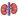
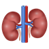
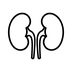

Reference board for checking whether the owned ConductScience kidney artwork remains legible at actual emoji size and whether it separates from bean-like and generic organ shapes. Artwork credit: Alla Shamanska, ConductScience.


The paired red forms and central blue/red contrast remain visible at 18px. The native 72px image shows the intended anatomy without requiring exact vendor reproduction.
Primary cue: paired organ layout, not fine vessel detail.

The black-and-white image is now opaque white-background line art instead of transparent dense line art. The 72px version keeps the paired outline, medial indentation, and simple ureter cue.
The 18px version is intentionally simplified and renders consistently in GitHub previews and PDF export.
A single bean-like silhouette has one object and no central anatomy. The kidney candidate uses paired organs and central connectors, which gives reviewers a defensible distinction.
The proposal should keep saying this is not a food-bean emoji.
At 18px, generic paired-organ marks can look similar. The strongest kidney-specific cues are medial indentation, ureter/downward connectors, and use context.
This supports the v0.13.4 proposal framing: global function plus visual cues, not silhouette alone.